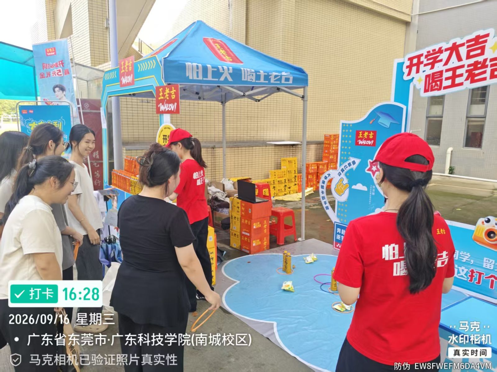
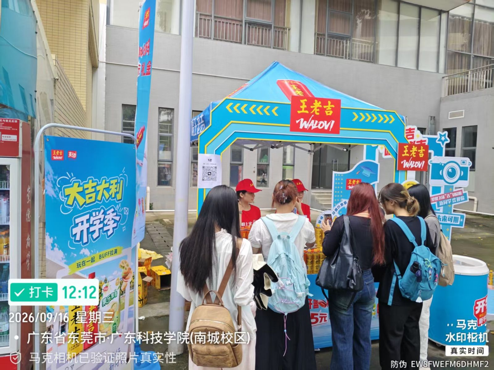
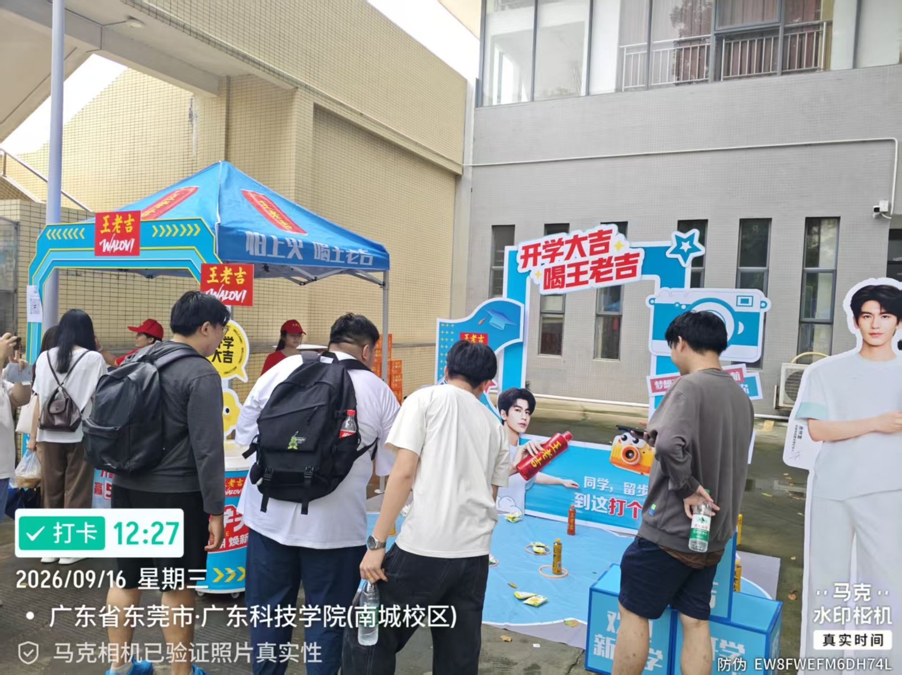
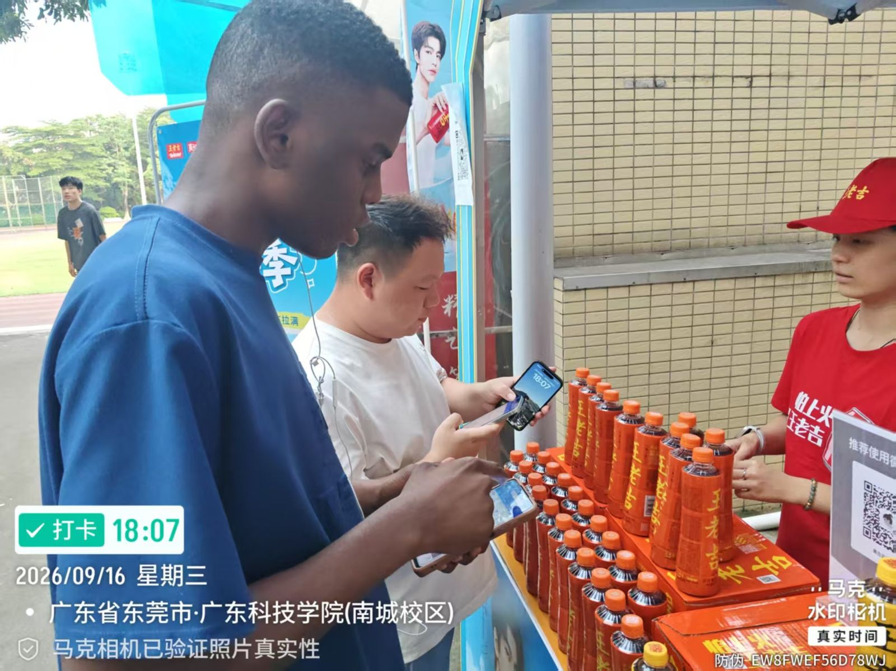
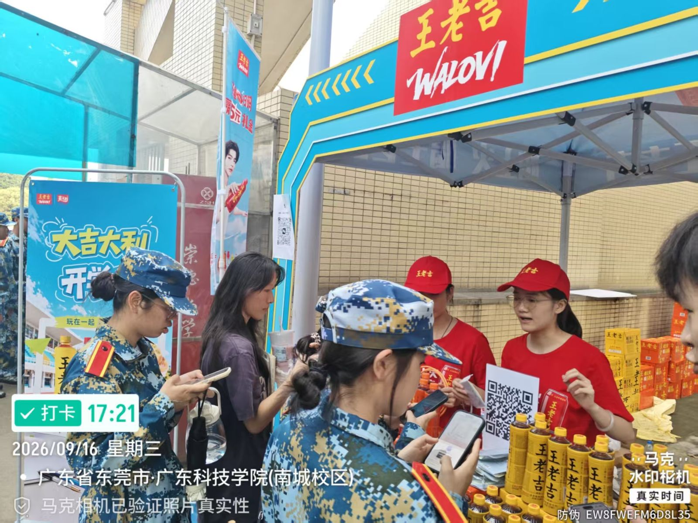

王老吉 × 嘉士利开学季校园活动：从 20 页执行手册到 265 场快闪落地
一、项目背景：双品牌进校园，声势怎么做大
开学季是快消品全年最密集的校园档期。这次是王老吉 × 嘉士利的双品牌联合：王老吉独立场次 + 联合设摊合计 265 场，嘉士利摊位 10㎡ 快闪 90 场 + 30㎡ 大场 10 场——而且每场都融入嘉士利派样与物料展示，两个品牌的预算在同一块场地上互相放大。
全国盘子铺到 50 所高校、13 座城市（广州片区 6 校，含 2 个 30㎡ 大场）。我作为现场督导，负责广东科技学院（南城校区）场次的落地执行：从物料搭建、人员分工培训，到每日销售与互动数据的统计回收。

二、两种场地规格，一条动线闭环
执行手册把场地分成两档：
- 30㎡（10m×3m）：3×3m 品牌帐篷 + 长桌产品堆头（展销区）、果乐幸运大转盘（游戏 1）、眼疾手快（游戏 2）双互动区，配 1 督导 + 3 工作人员；
- 10㎡（5m×2m）：展销 + 转盘单游戏，少一名兼职，适合人流量中等的点位。
规格可以缩，但动线逻辑不能变：抽奖券是整条动线的钩子。免费领取（每人限 1 张）先把人拉进摊位——想抽奖就必须走到游戏区，中途路过展销区时被「买满 15 元任选赠品」和「扫码领券」二次转化。等待排队本身也是展销的黄金时段。

三、三重福利机制：把「路过」变成「参与」
- 福利① 免费抽奖券：进摊位即领、每人限 1 张——它同时是游戏凭证和互动考核的计数单位；
- 福利② 消费满赠：购嘉士利产品满 15 元，任选王老吉 1 瓶或 55g 果乐果香一盒（SKU 组合 3–4 个、单价 10–30 元）；
- 福利③ 扫码领券：天猫 / 抖音专属优惠券立牌，每 ID 限领一次，再引导加企微——线上转化的沉淀动作。
三类人群各取所需：不消费的玩转盘、想消费的拿满赠、线上党扫码领券，没有人被排除在活动之外。
转盘的概率设计很值得学：10% 大礼包 / 15% 王老吉 / 15% 55g 饼干 / 30% 27.6g / 30% 谢谢参与——「谢谢参与」占三成保住成本，中奖率七成保住体验，「差一点中大奖」的体感比奖值本身更拉动复玩和围观。眼疾手快（仅 30㎡ 场）则是技巧型玩法：短棒随机下落徒手接，≥5 根超级大礼包、≥3 根得 55g 一盒或 27.6g 两包——围观性极强，排队本身就是内容。
还有一层社交裂变：消费王老吉满 10 元可掷骰子赢礼；发朋友圈带话题 #王老吉开盖赢888现金奖 即送湿纸巾——把线下人流反哺成线上传播。

四、现场督导的一天：从前一晚到 18:00 撤场
- 前一晚：物料进场，帐篷 / 背板 / 堆头搭建与验收；当地经销商配货（每校 150–200 份，前晚或当日 9 点前送达），接收清点；
- 8:30–10:00：布置检查 + 3 名工作人员分工培训——展销 1 人、转盘 1 人、眼疾手快 1 人，话术和赠品规则当场过一遍；
- 10:00–18:00：巡场——补货与陈列整理、抽奖券核销节奏、扫码话术提醒、现场素材记录；
- 18:00 后：礼品与物料盘点、撤场拆卸、当日效果回收表（游戏人数、销售单数与金额为督导统计项，领券与企微数据走后台）。
每场礼品盘子是固定的：100 瓶王老吉、100 盒 55g 饼干、200 包 27.6g 饼干。派发节奏要跟人流对表——上午省着派会冷场，下午提前派光会断档，这大概是督导最像「操盘手」的部分。
五、意外爆点：语言不通的留学生，也来排队打卡
这次现场最大的意外收获是留学生。大色块的蓝色帐篷 + 国民品牌的视觉冲击是第一层吸引力；「免费抽奖」零语言门槛是第二层——不用看懂任何中文文案，排到了就能玩。

当然，扫码领券这条转化链路对他们有门槛（需要本地手机号 / 平台 ID），但产品兴趣是真实的——有人直接指着堆头购买。这给我一个很直接的启发：校园活动做出「普适参与感」就两个杠杆——视觉够大、参与门槛够低；至于领券、加企微这类转化动作，本来就是为目标人群设计的，不必强求每个围观者走完全链路。
另外开学季撞上军训，迷彩服的新生成建制地涌进来，是天然的人流波峰——踩准校内作息节奏，比多印两千张传单有用。

六、考核线拆解：一场活动的数字目标
执行手册对每场都给了明确的考核线，督导的日常就是围着这几张表转：
| 考核项 | 标准 | 现场抓手 |
|---|---|---|
| 单场销售 | 60 单以上（单价 10–30 元） | 堆头组合 3–4 个 SKU，满赠话术前置 |
| 互动参与 | 500 人 / 场 | 抽奖券即互动凭证，游戏区排队节奏管理 |
| 扫码领券 & 加企微 | 200 个 / 场 | 立牌位置 + 话术引导，每 ID 限领一次 |
| 效果回收 | 每日活动后 | 游戏人数 / 销售单数金额（督导）+ 领券企微（后台） |
七、复盘
抽奖券把「领礼品」和「互动」绑死，互动考核天然有抓手，不用催数据；三区动线让等待的人在展销区滞留，排队即转化；日结回收表让每场的问题当天就能看见、第二天就能调。
10㎡ 场次只有转盘一个游戏，峰值时段排队一长人容易散；扫码领券高度依赖现场话术，人少时段转化下滑明显；礼品全靠物流配送、现场补货弹性小，大奖类「派完即止」的体验管理需要提前排布节奏。
方法论沉淀
校园快闪的公式：一张「凭证」× 三重福利 × 可复制的督导日结。场地规格可以变，但「凭证—核销—数据回收」的闭环不能变——它同时喂饱了品牌曝光、现场转化和效果考核三件事。下一篇 · 品牌活动OPPO 校园奇妙市集复盘：30 顶帐篷撬动的品牌活动 →